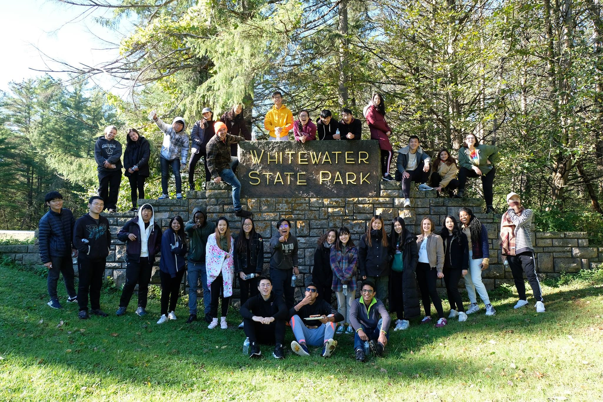
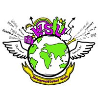

The International Club of Winona State University established a constitution for the purpose of providing educational and cultural programs that strengthen the community and promotes and creates an environment in which the International community can develop to their fullest potentials. Meetings every other Monday in Minne 110 at 6:30pm!